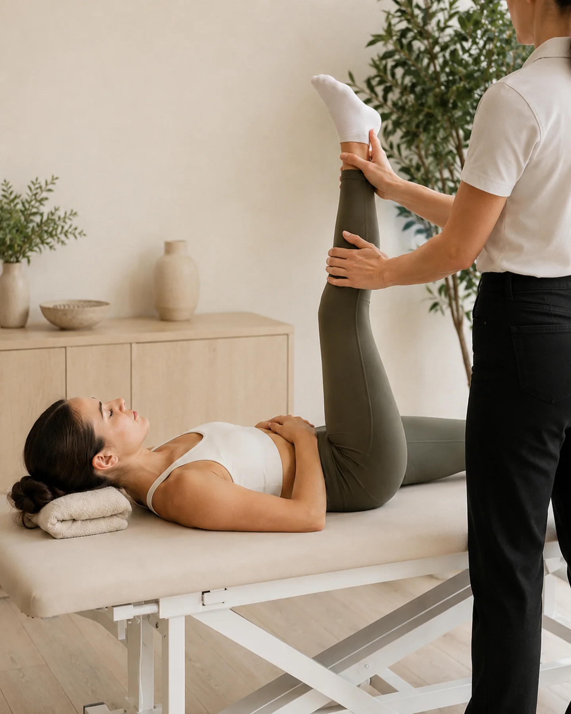

05 — STRETCHING
Muévete mejor. Siéntete mejor.
Sesiones diseñadas para mejorar tu movilidad, ganar flexibilidad y liberar las tensiones que limitan tu movimiento.

Qué es el Stretching
Un espacio guiado para moverte con más libertad
El Stretching es un trabajo guiado de movilidad y flexibilidad, adaptado a cómo te mueves y cómo lo sientes en cada sesión. No es una tabla de estiramientos igual para todos: se ajusta a tu cuerpo, tu ritmo y el objetivo del día.
No se trata de forzar el cuerpo, sino de recuperar espacio para moverse.
¿Para quién puede ser interesante?
Qué trabajamos
Qué se trabaja en cada sesión de Stretching
Cada sesión combina varios de estos objetivos, según cómo llegues ese día.
-
01
Movilidad
Amplía el rango de movimiento de tus articulaciones para que cueste menos moverte cada día.
-
02
Flexibilidad
Gana elasticidad muscular de forma progresiva y adaptada a tu punto de partida.
-
03
Amplitud de movimiento
Trabaja el recorrido completo de cada gesto, sin forzar más allá de lo que tu cuerpo permite.
-
04
Tensión muscular
Libera la tensión acumulada por el día a día, el deporte o las posturas mantenidas.
-
05
Recuperación corporal
Acompaña la recuperación entre sesiones de fuerza, Pilates u otras actividades físicas.
Relación entre áreas
El Stretching puede combinarse con fisioterapia, fuerza o Pilates Reformer, como complemento para mantener la movilidad ganada o dar continuidad a tu proceso.
Ver todas las áreas →Tarifas de Stretching
¿Cuánto cuesta una sesión?
Stretching comparte la misma tarifa en clínica que Fisioterapia, Bienestar, Fuerza y Pilates: misma valoración inicial y mismos precios por sesión.
Reseñas de Google
Experiencias reales de quienes han confiado en Physio Wellness
Dale más espacio a tu movimiento.
Sesiones enfocadas en mejorar tu movilidad, flexibilidad y recuperación.